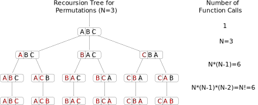

All permutations and next permutation
Contents
All permutations and next permutation¶
Next Permutation¶
Permutation is the act of arranging members into a sequence or linear order. For example each combination of a Rubik’s cube is one individual permutation. In this exercise a totally ordered set is given and the next permutation needs to be found.
Solution¶
The algo is simple
beginning from the end, find the longest decreasing sequence 42531
denote the preceding item as pivot 42531.
Swap pivot with the smallest higher item 43521 in the sequence
revert the sequence 43125.
All Permuations¶
Number of possible permutations¶
Important here is how large is the set (\(n\)) and how many no-repeating objects create the permutation \(r\). In the case above “NEXT” has 4 elements (\(n=4\)) and we need to choose 4 of them (r = 4).
if elements can be repeated than the formula changes
if \(n = r\)
In the example case
Solution¶

Imports¶
import math
import itertools
Programatical reflections¶
In python string characters have values and can be compared against each other
values = "12ABab"
print("{}<{} is {}".format(values[0], values[1], values[0] < values[1]))
print("{}<{} is {}".format(values[1], values[2], values[1] < values[2]))
print("{}<{} is {}".format(values[2], values[3], values[2] < values[3]))
print("{}<{} is {}".format(values[3], values[4], values[3] < values[4]))
print("{}<{} is {}".format(values[4], values[5], values[4] < values[5]))
print("+----------lowest value")
print("| +--highest value")
print("| |")
print("0-9A-Za-z")
1<2 is True
2<A is True
A<B is True
B<a is True
a<b is True
+----------lowest value
| +--highest value
| |
0-9A-Za-z
Algorithm¶
def permute(string: str, prefix: str = '', premutations: list = []):
"""Find all permutations of a given string of characters and place them in a list
Args:
string (str): string of characters in any perticular order
prefix (str, optional): [description]. Defaults to ''.
premutations (list, optional): [description]. Defaults to [].
Returns:
[type]: [description]
"""
if len(string) == 0:
premutations.append(prefix)
else:
for i in range(len(string)):
rem = string[0:i] + string[i + 1:]
permute(rem, prefix + string[i], premutations)
def allPermutations(string: str):
"""List all possible permutations for a given list of values
Args:
string (str): list of characters in any perticular order
"""
number_of_permutations = math.factorial(len(string))
print(number_of_permutations)
permutations = []
permute(string, "", permutations)
return permutations
Test¶
results_with_duplicates = allPermutations("NEXTT")
if(len(set(results_with_duplicates)) == len(results_with_duplicates)):
print("All elements are unique")
print(results_with_duplicates)
print("Clean up duplicates")
results_without_duplicates = set(results_with_duplicates)
if(len(set(results_with_duplicates)) == len(results_with_duplicates)):
print("All elements are unique")
print(results_without_duplicates)
120
['NEXTT', 'NEXTT', 'NETXT', 'NETTX', 'NETXT', 'NETTX', 'NXETT', 'NXETT', 'NXTET', 'NXTTE', 'NXTET', 'NXTTE', 'NTEXT', 'NTETX', 'NTXET', 'NTXTE', 'NTTEX', 'NTTXE', 'NTEXT', 'NTETX', 'NTXET', 'NTXTE', 'NTTEX', 'NTTXE', 'ENXTT', 'ENXTT', 'ENTXT', 'ENTTX', 'ENTXT', 'ENTTX', 'EXNTT', 'EXNTT', 'EXTNT', 'EXTTN', 'EXTNT', 'EXTTN', 'ETNXT', 'ETNTX', 'ETXNT', 'ETXTN', 'ETTNX', 'ETTXN', 'ETNXT', 'ETNTX', 'ETXNT', 'ETXTN', 'ETTNX', 'ETTXN', 'XNETT', 'XNETT', 'XNTET', 'XNTTE', 'XNTET', 'XNTTE', 'XENTT', 'XENTT', 'XETNT', 'XETTN', 'XETNT', 'XETTN', 'XTNET', 'XTNTE', 'XTENT', 'XTETN', 'XTTNE', 'XTTEN', 'XTNET', 'XTNTE', 'XTENT', 'XTETN', 'XTTNE', 'XTTEN', 'TNEXT', 'TNETX', 'TNXET', 'TNXTE', 'TNTEX', 'TNTXE', 'TENXT', 'TENTX', 'TEXNT', 'TEXTN', 'TETNX', 'TETXN', 'TXNET', 'TXNTE', 'TXENT', 'TXETN', 'TXTNE', 'TXTEN', 'TTNEX', 'TTNXE', 'TTENX', 'TTEXN', 'TTXNE', 'TTXEN', 'TNEXT', 'TNETX', 'TNXET', 'TNXTE', 'TNTEX', 'TNTXE', 'TENXT', 'TENTX', 'TEXNT', 'TEXTN', 'TETNX', 'TETXN', 'TXNET', 'TXNTE', 'TXENT', 'TXETN', 'TXTNE', 'TXTEN', 'TTNEX', 'TTNXE', 'TTENX', 'TTEXN', 'TTXNE', 'TTXEN']
Clean up duplicates
{'ENTXT', 'TXENT', 'XNTET', 'NTXTE', 'XTNTE', 'NTEXT', 'TETNX', 'TNETX', 'NTETX', 'TTXEN', 'TXTNE', 'TXETN', 'ETNXT', 'XTETN', 'TNEXT', 'XNTTE', 'XETTN', 'XTENT', 'TXTEN', 'NTTEX', 'XTTNE', 'TNTEX', 'TTNEX', 'EXTTN', 'EXNTT', 'TNXTE', 'TENTX', 'XENTT', 'TTNXE', 'ETNTX', 'TEXTN', 'TTENX', 'ETXTN', 'ETXNT', 'NTTXE', 'TNXET', 'NEXTT', 'XNETT', 'EXTNT', 'TETXN', 'XTTEN', 'TXNTE', 'TTEXN', 'TXNET', 'NETXT', 'TNTXE', 'TEXNT', 'XTNET', 'NXETT', 'ENXTT', 'TTXNE', 'NETTX', 'NXTET', 'NTXET', 'ETTNX', 'XETNT', 'TENXT', 'ENTTX', 'ETTXN', 'NXTTE'}
With library itertools¶
with duplicates
string_permutations = itertools.permutations('IGIT')
permutations_with_duplicates = []
for string in string_permutations:
permutations_with_duplicates.append(''.join(string))
if(len(set(permutations_with_duplicates)) == len(permutations_with_duplicates)):
print("All elements are unique")
print(permutations_with_duplicates)
['IGIT', 'IGTI', 'IIGT', 'IITG', 'ITGI', 'ITIG', 'GIIT', 'GITI', 'GIIT', 'GITI', 'GTII', 'GTII', 'IIGT', 'IITG', 'IGIT', 'IGTI', 'ITIG', 'ITGI', 'TIGI', 'TIIG', 'TGII', 'TGII', 'TIIG', 'TIGI']
without duplicates
permutations_without_duplicates = set(permutations_with_duplicates)
if(len(set(permutations_without_duplicates)) == len(permutations_without_duplicates)):
print("All elements are unique")
print(permutations_with_duplicates)
All elements are unique
['IGIT', 'IGTI', 'IIGT', 'IITG', 'ITGI', 'ITIG', 'GIIT', 'GITI', 'GIIT', 'GITI', 'GTII', 'GTII', 'IIGT', 'IITG', 'IGIT', 'IGTI', 'ITIG', 'ITGI', 'TIGI', 'TIIG', 'TGII', 'TGII', 'TIIG', 'TIGI']